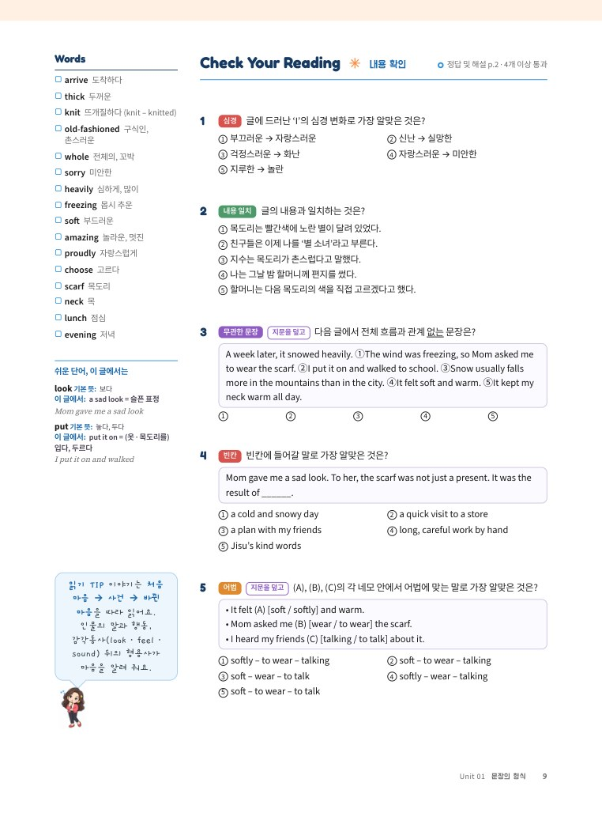
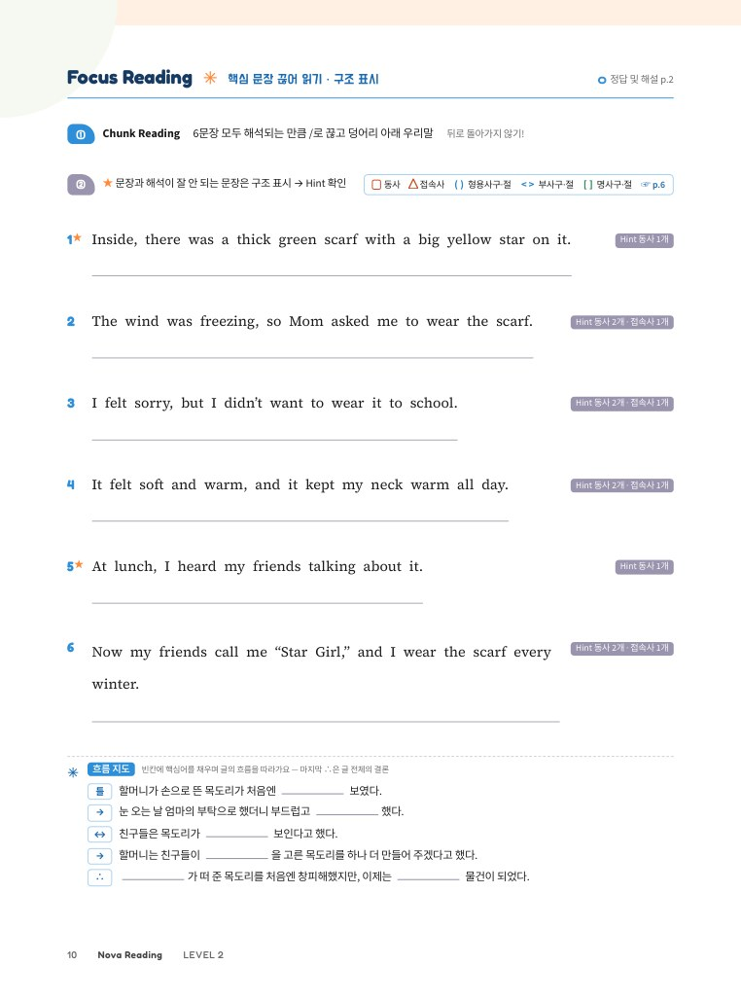
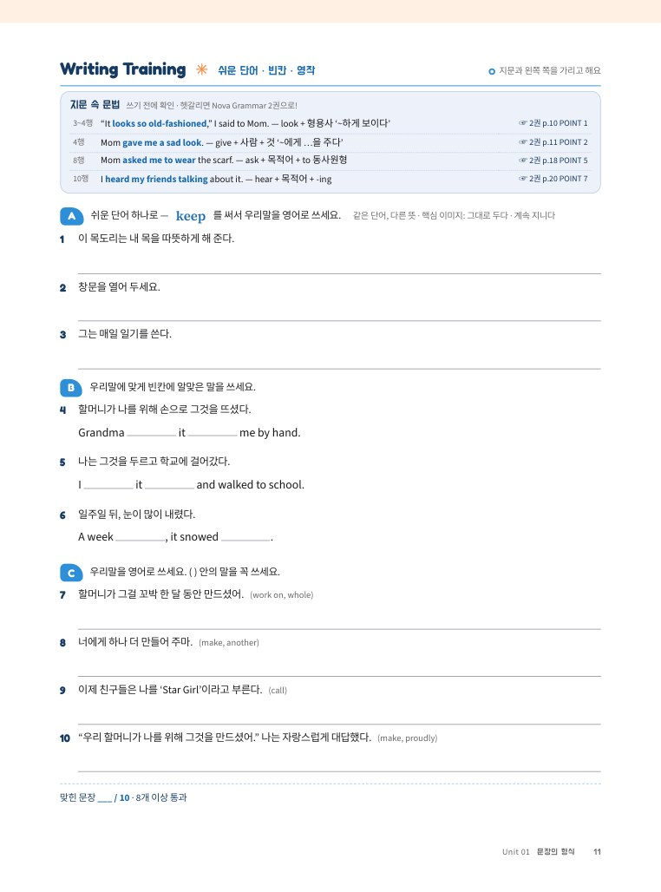
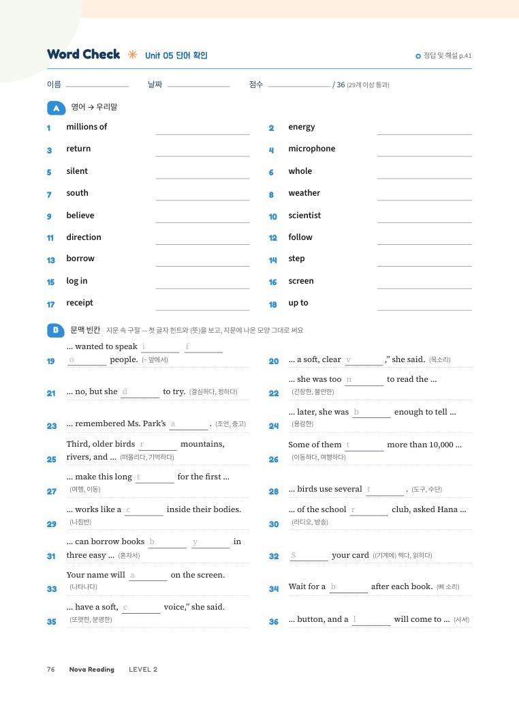
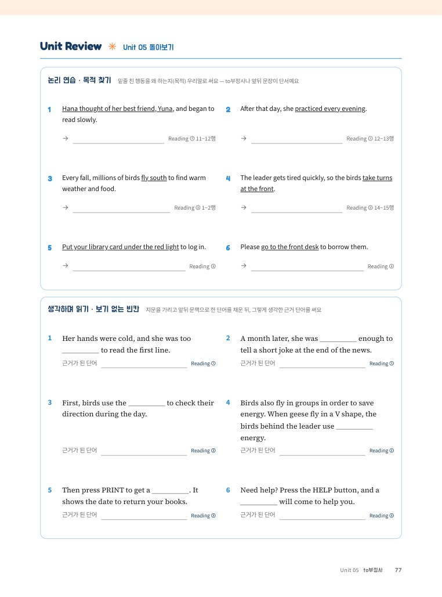
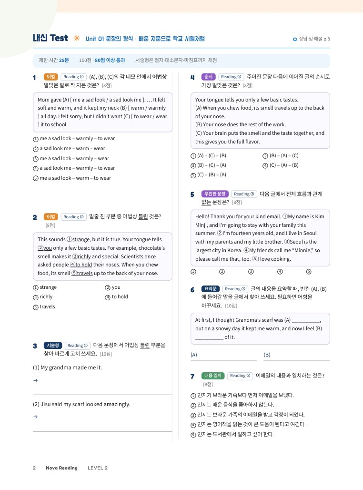
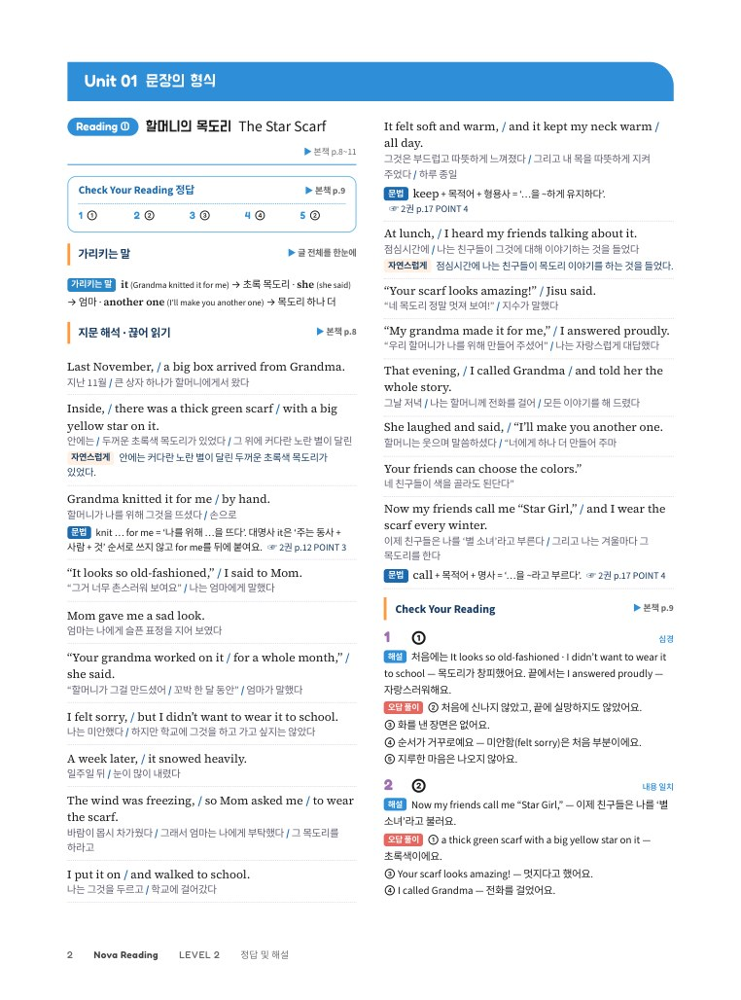

Nova Reading
표시 없이, 앞에서부터 바로 읽기
차례
Contents구성과 특징
How to Use This Book한 Unit은 지문 세 개와 Word Check · Unit Review로 이루어져요. 지문 하나는 지문 → 문제 → Focus Reading → 영작 네 쪽이에요. 이 책의 중심은 Chunk Reading(직독직해) — 의미 덩어리로 끊어, 뒤로 돌아가지 않고 앞에서부터 바로 뜻을 잇는 읽기예요.









 노바 쌤
노바 쌤Nova Reading 공부법
지문 하나(네 쪽)를 하루에 공부하면 알맞아요. 순서대로 하고 통과 기준을 넘으면 다음으로 가요.
- ⓪ 단어 먼저 — 맞은편 Words와 클래스카드로 지문 단어를 먼저 외워요.
- ① 처음 읽기 — Think!와 알고 읽기를 본 뒤, 시간을 재며 끝까지 읽어요. 모르는 말이 있어도 멈추지 말고, 뒤로 돌아가지 말고!
- Check Your Reading — 5문항을 풀고 해설로 채점해요. 4개 이상이면 통과.
- Focus Reading — 6문장 모두 끊어서 앞에서부터 해석. ★ 문장은 구조 표시 → Hint 확인, 마지막에 흐름 지도. 표시 방법은 p.6~7.
- ② 음원 따라 읽기 → ③ 다시 읽기 — QR 음원을 따라 소리 내어 읽고(듣기 페이지에서 속도 조절), 음원보다 빨리 다시 읽으며 시간을 재요. ①보다 빨라졌나요?
- Writing Training — 지문과 왼쪽 쪽을 가리고 쉬운 단어 · 빈칸 · 영작. 10개 중 8개 이상이면 통과.
- 해설로 확인 — Focus Reading 표시 정답과 끊어 읽기 해석 · 흐름 지도를 보고, 틀린 문장은 해설 표시를 보며 다시 앞에서부터 읽어요.
- Word Check — 80% 이상 통과. 틀린 단어는 Words 칸에 표시하고 다시 외워요.
- Unit Review — 논리 연습과 보기 없는 빈칸으로 그 Unit을 돌아봐요.
- 워크북 — 내신 Test(80점 이상)와 본문 완성.
다시 ① 틀린 문제를 해설 보기 전에 한 번 더 → ② 지문의 근거 문장을 찾아 표시 → ③ 해설 읽기 → ④ 음원과 함께 지문을 한 번 더 읽기
Unit 12까지 마치면 Mini TEST 1 · 2(p.176~)를 실전처럼 30분씩 풀어요. 틀린 유형은 그 유형이 나온 Unit의 지문으로 돌아가 복습해요.
진도표
My Plan한 칸을 마칠 때마다 □에 ✓. 지문 하나를 하루에 하면 한 Unit은 1주 안팎이에요. 같은 주에 Nova Vocabulary 2의 두 Unit(‘어휘 Unit’ 칸)을 함께 해요.
| 어휘 Unit | 지문 ① | 지문 ② | 지문 ③ | Word Check | Unit Review | 워크북 | 시작한 날 | 마친 날 | |
|---|---|---|---|---|---|---|---|---|---|
| Unit 01문장의 형식 | 1 · 2 | □ | □ | □ | □ | □ | □ | / | / |
| Unit 02시제 | 3 · 4 | □ | □ | □ | □ | □ | □ | / | / |
| Unit 03조동사 | 5 · 6 | □ | □ | □ | □ | □ | □ | / | / |
| Unit 04수동태 | 7 · 8 | □ | □ | □ | □ | □ | □ | / | / |
| Unit 05to부정사 | 9 · 10 | □ | □ | □ | □ | □ | □ | / | / |
| Unit 06동명사 | 11 · 12 | □ | □ | □ | □ | □ | □ | / | / |
| Unit 07분사 | 13 · 14 | □ | □ | □ | □ | □ | □ | / | / |
| Unit 08대명사 | 15 · 16 | □ | □ | □ | □ | □ | □ | / | / |
| Unit 09형용사와 부사 | 17 · 18 | □ | □ | □ | □ | □ | □ | / | / |
| Unit 10비교 | 19 · 20 | □ | □ | □ | □ | □ | □ | / | / |
| Unit 11접속사 | 21 · 22 | □ | □ | □ | □ | □ | □ | / | / |
| Unit 12관계대명사 | 23 · 24 | □ | □ | □ | □ | □ | □ | / | / |
| Mini TEST 1 | 맞힌 개수 ____ / 12 | / | / | ||||||
| Mini TEST 2 | 맞힌 개수 ____ / 12 | / | / | ||||||
How to Mark
✳문장 표시 방법긴 문장도 동사를 찾고 꾸미는 말을 묶으면 한눈에 보여요. 기호는 Reading 1과 같은 다섯 가지예요.
| 기호 | 이름 · 하는 일 | 예문 · 해석(끊은 순서대로) | |
|---|---|---|---|
| 동사 · 연결사문장의 중심 | 동사문장의 중심. 문장(절)마다 하나 — 괄호 안의 동사도 표시해요. | Mina reads comics.미나는 / 읽는다 / 만화책을 | |
| 연결사절과 절을 이어요. 접속사 and · that …와 관계대명사 who · which · what이 모두 연결사(△). | It rained, so we stayed home.비가 왔다 / 그래서 우리는 / 집에 있었다 | ||
| 꾸미는 말덧붙는 설명 | ( ) | 형용사구 · 절명사를 꾸며요. 화살표 끝 = 꾸밈 받는 명사(밑줄). 관계대명사절도 ( ). | I have a friend (who lives in Jeju).나는 친구가 있다 / 제주에 사는 |
| < > | 부사구 · 절때 · 장소 · 방법 · 이유 · 목적을 더해요. | We met <at the park>.우리는 만났다 / 공원에서 | |
| 명사 자리명사 역할 덩어리 | [ ] | 명사구 · 절덩어리가 통째로 명사 자리(주어 · 목적어 · 보어)에. to부정사 · 동명사 덩어리도 [ ]. | I know [that she is busy].나는 안다 / 그녀가 바쁘다는 것을 |
이렇게 표시해요

How to Mark
✳표시하며 읽기 5단계동사 찾기 동사에 □. 동사가 3개 → 문장(절)이 3개예요. to be는 □ 하지 않아요.
The girl who sits next to me wants to be a vet because she loves animals.
연결사 찾기 절과 절을 잇는 연결사(접속사 · 관계대명사)에 △. 동사 3개 = △ 2개.
The girl who sits next to me wants to be a vet because she loves animals.
꾸미는 말 묶기 명사를 꾸미면 ( ) + 화살표, 때 · 장소 · 방법 · 이유면 < >.
The girl (who sits next to me) wants to be a vet <because she loves animals>.
명사 덩어리 묶기 · 진짜 동사 확인 덩어리가 명사 자리에 오면 [ ] → 괄호 밖에 남은 □ wants가 진짜 동사.
The girl (who sits next to me) wants [to be a vet] <because she loves animals>.
표시 없이 끊어서 앞에서부터 읽기 덩어리마다 / 긋고, 나온 순서대로 바로 뜻을 붙여요. 끊는 자리와 개수는 사람마다 달라도 돼요 — 순서대로 뜻이 이어지면 정답, 덩어리 안(a cup / of water)만 가르지 않아요.
to부정사의 세 얼굴 — [ ]일까, ( )일까, < >일까?
‘무엇을?’(주어 · 목적어 · 보어 자리)이면 [ ], 명사 바로 뒤에서 ‘어떤 ~?’이면 ( ), ‘왜 · 언제 · 어떻게?’이면 < > — 내신의 ‘용법 구별’이 바로 이거예요.
Focus Reading은 이렇게 해요
| ① Chunk Reading | 6문장 모두 / 로 끊고 덩어리 아래 우리말. 표시는 하지 않아요. |
|---|---|
| ② ★ 구조 표시 | ★ 문장과 해석이 잘 안 되는 문장만 1~4단계로 표시하고 Hint 개수와 맞춰 봐요. ★에 표시가 없으면 안 한 거예요! |
| ③ 흐름 지도 | 빈칸에 핵심어를 채우며 글의 흐름을 따라가요. 마지막 ∴ 빈칸은 글 전체의 결론이에요. |
| ✓ 해설로 채점 | 6문장 모두 표시 정답이 있어요. 틀린 문장은 표시를 보며 다시 앞에서부터 읽어요. |